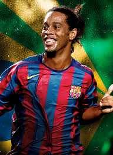
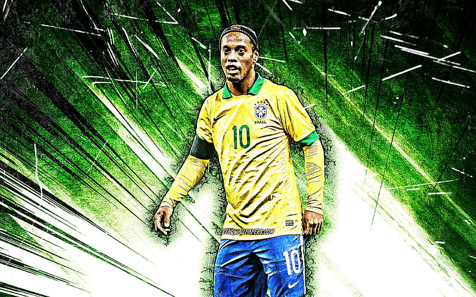
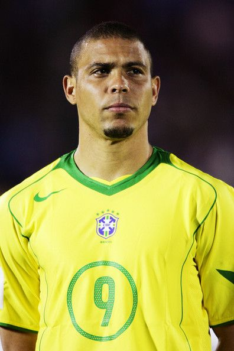
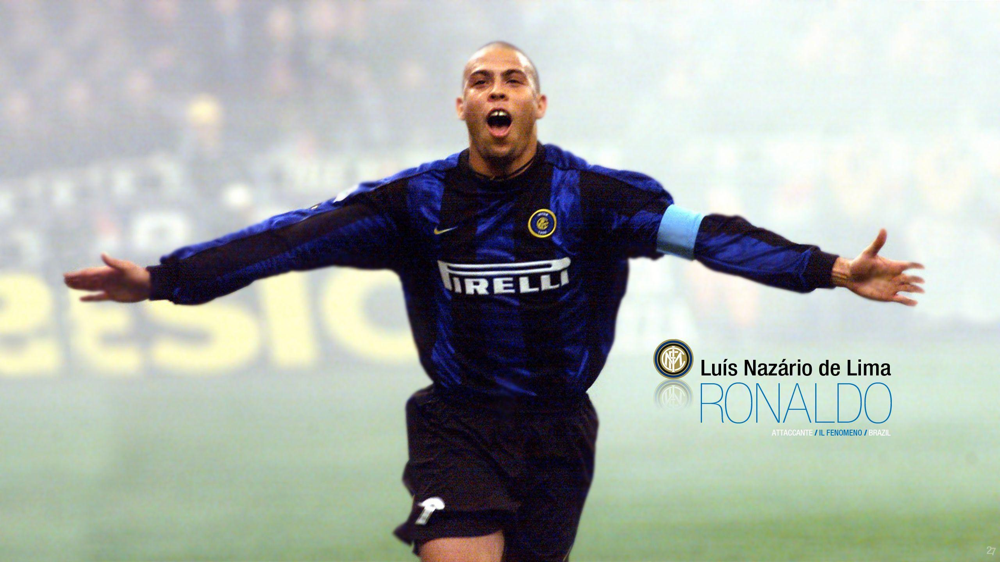
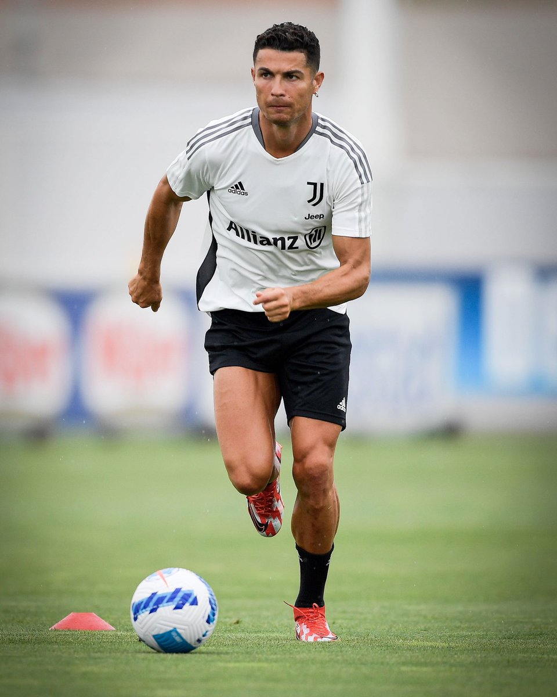
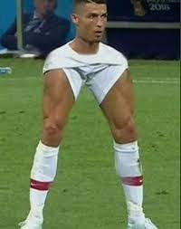

Ronaldinho


Ronaldo de Assis Moreira (born 21 March 1980), commonly known as Ronaldinho Gaúcho or simply Ronaldinho, is a Brazilian former professional footballer and current ambassador for Barcelona. He played mostly as an attacking midfielder, but was also deployed as a winger. Often considered one of the best players of his generation and regarded by many as one of the greatest of all time, Ronaldinho won two FIFA World Player of the Year awards and a Ballon d'Or. A global icon of the sport, he was renowned for his technical skills, creativity and dribbling ability, as well as his use of tricks, feints, overhead kicks, no-look passes and accuracy from free-kicks.
Ronaldo "Phenomenon"


Ronaldo Luís Nazário de Lima (born 18 September 1976), commonly known as Ronaldo, is a Brazilian business owner, president of La Liga club Real Valladolid, and a retired professional footballer who played as a striker. Popularly dubbed O Fenômeno ("The Phenomenon"), and also nicknamed R9,[3] he is widely considered one of the greatest players of all time. As a multi-functional striker who brought a new dimension to the position, Ronaldo has been the influence for a generation of strikers that have followed. His individual accolades include being named FIFA World Player of the Year three times, and winning two Ballon d'Or awards.
Cristiano Ronaldo


Cristiano Ronaldo dos Santos Aveiro (born 5 February 1985) is a Portuguese professional footballer who plays as a forward for Serie A club Juventus and captains the Portugal national team. Often considered the best player in the world and widely regarded as one of the greatest players of all time, Ronaldo has won five Ballon d'Or awards and four European Golden Shoes, the most by a European player. He has won 32 major trophies in his career, including seven league titles, five UEFA Champions Leagues, one UEFA European Championship, and one UEFA Nations League. Ronaldo holds the records for most goals (134) and assists (42) in the Champions League, most goals in the European Championship (14), and is currently tied with Ali Daei for most international goals (109). He is one of the few recorded players to have made over 1,100 professional career appearances, and has scored over 780 official senior career goals for club and country.
Thanks For Reading!!
